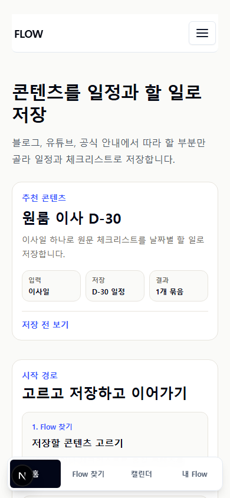
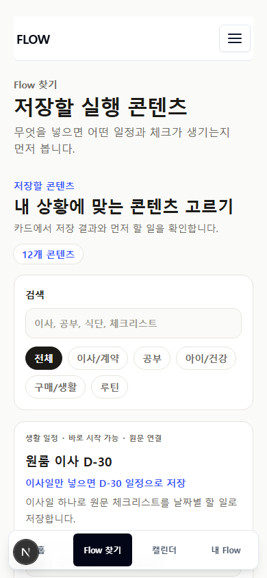
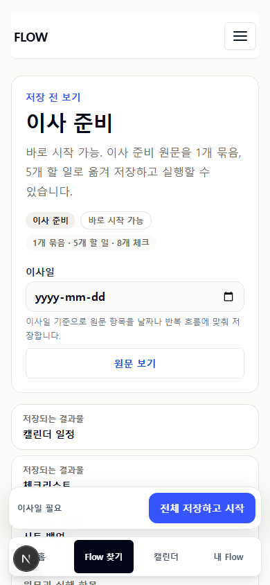
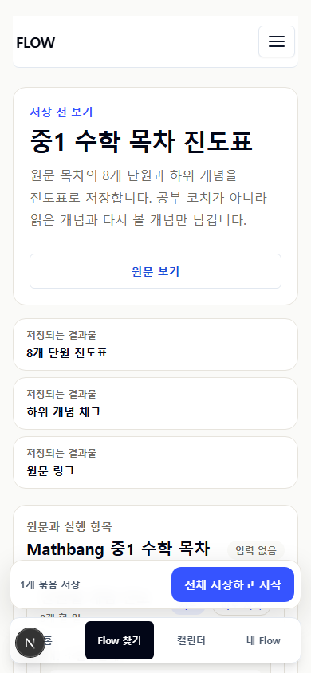
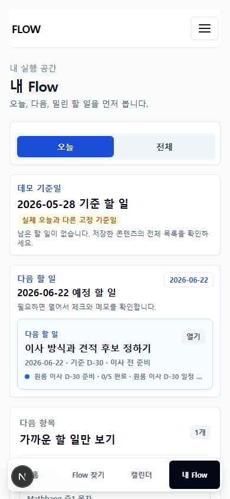
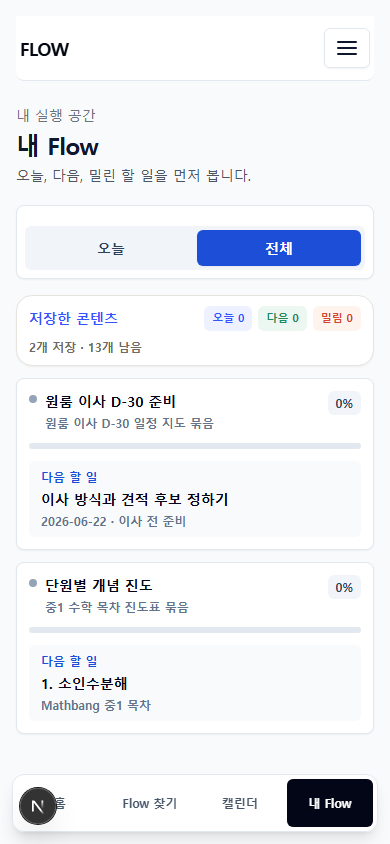
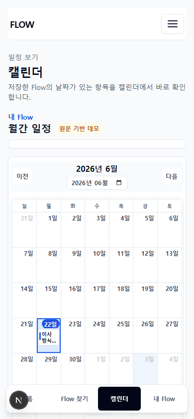
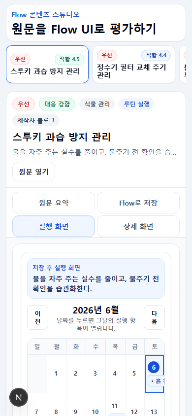

FlowMe 전체 UX/UI 검토 보드
소스와 실제 모바일 화면을 같이 보는 검토 패키지
FlowMe는 콘텐츠를 읽는 서비스가 아니라, 콘텐츠를 저장하고 일정/체크/시트/메모로 실행하는 앱입니다. 이 보드는 Claude Design이 소스 구조와 모바일 렌더링을 함께 보면서 우선순위 높은 UX/UI 문제를 찾기 위한 자료입니다.
홈
Flow 찾기
캘린더
내 Flow
390px 모바일
소스 우선 검토
검토할 핵심
서비스 이해
처음 온 사용자가 FlowMe가 무엇을 해주는지, 어디를 누르면 되는지 5초 안에 이해하는지 봅니다.
저장 후 실행
저장 완료가 끝처럼 보이지 않고 My Flow에서 오늘/다음 할 일이 먼저 보이는지 봅니다.
정보 밀도
카드, 버튼, 설명, source/detail/memo가 상용 앱 대비 과한지 봅니다.
내부 모델 분리
Flow Map, Step, Item, review, audit 같은 내부 언어가 사용자 화면에 새지 않는지 봅니다.
소스 진입점
components/flow/AppClient.tsx: 홈, Flow 찾기, 공개 Flow 상세, My Flow, 캘린더의 대부분 UIcomponents/flow/SourceBackedFlowMapPage.tsx: source-backed Flow Map 상세components/flow/SourceBackedFlowMapSaveButton.tsx: Flow Map 저장 후 My Flow 이동lib/flow/source-backed-my-flow.ts: source-backed 저장/실행 구조lib/flow/my-flow-step-export.ts: My Flow detail/export 구조docs/SERVICE_STRUCTURE.md: 현재 서비스 구조와 IA 기준선
모바일 화면 증거











요청 출력
Blocking / High / Medium / Low로 나누고, 각 항목마다 문제, 근거 화면 또는 소스 파일, 사용자 혼란, 수정 방향, 기대 효과를 적어주세요.